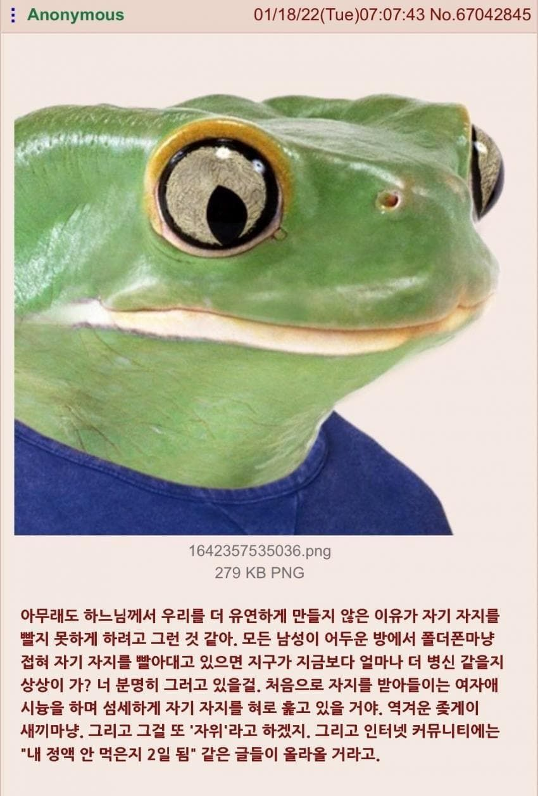

남자가 유연하지 않게 만든 이유
댓글
궁금하긴하다
친구중에 되는 새끼있었는데
별명이 신의 축복이였어 우린 신복이라 불렀지
내 정액 안먹은지 2일됨
그럼 똥꼬로 느끼는 기능은 왜넣었는데!!
딱 귀두랑 기둥 사이 홈에 입술까지 간신히 닿음 그 이상은 안되더라
별로 기분좋을거같진 않음.
스스로 입을 댈수 있는 동물들이 몇 있긴하던데..
예를들어 지금 모니터 옆에서 항문 핥고있는 우리집 좆냥이라던가

궁금하긴하다
친구중에 되는 새끼있었는데
별명이 신의 축복이였어 우린 신복이라 불렀지
내 정액 안먹은지 2일됨
그럼 똥꼬로 느끼는 기능은 왜넣었는데!!
딱 귀두랑 기둥 사이 홈에 입술까지 간신히 닿음 그 이상은 안되더라
별로 기분좋을거같진 않음.
스스로 입을 댈수 있는 동물들이 몇 있긴하던데..
예를들어 지금 모니터 옆에서 항문 핥고있는 우리집 좆냥이라던가
아 ㅅㅂ 어렸을땐 됐었는데 크니까 안되더라